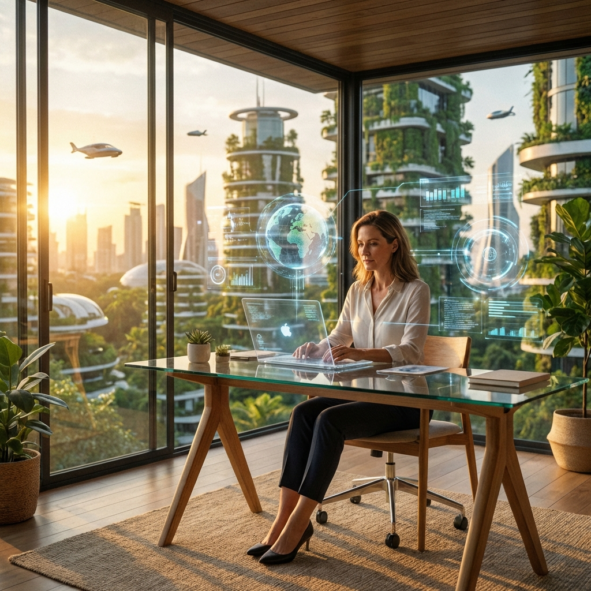

The Future of Remote Work: A Tectonic Shift
Why natural language context is the new skill to master (and other thoughts on distributed teams).

The future of remote work feels less like a trend and more like a tectonic shift in how we think about the office. Imagine waking up, grabbing your coffee, and the first thing you see is a video call with a team spread across three continents. That isn’t a sci‑fi scenario; it’s the new normal for over 70 % of the global workforce, according to a 2024 Gartner study. The hook? If you’ve ever dreamed of trading the hum of a crowded office for the quiet of your own kitchen, the data shows you’re not alone, and the opportunities—and challenges—are just beginning to unfold.
The Rise of Global Mobility
📊 Remote work adoption has exploded, but it’s not a one‑size‑fits‑all model. Companies that embraced hybrid policies early saw a 25 % increase in employee retention, while those that resisted faced talent drain. The numbers also reveal a shift in skill demands: digital fluency, self‑management, and cross‑cultural communication now rank higher than ever. Interestingly, the rise in remote work has spurred a boom in “digital nomad” visas, with countries like Estonia, Barbados, and Portugal offering pathways for professionals who want to work from anywhere while contributing to the local economy. This global mobility is reshaping talent pipelines, making it easier for businesses to tap into niche expertise without geographic constraints.
Challenges in Paradise
🤝 Yet, the promise of flexibility comes with its own set of headaches. Isolation can erode team cohesion, and the blurring of work‑life boundaries often leads to burnout. Companies are tackling these issues by investing in robust virtual collaboration tools, establishing clear communication protocols, and prioritizing mental‑health resources. Some firms are experimenting with “remote‑first” cultures, where policies and processes are designed with the assumption that employees will not be physically present. This proactive approach not only reduces the friction of onboarding but also sends a powerful message that remote talent is valued equally.
Looking Ahead (Crystal Ball)
🔮 Looking ahead, the trajectory of remote work looks less like a temporary experiment and more like a permanent layer in the corporate architecture. Advances in AR/VR could soon bring immersive meetings that feel almost as real as being in the same room, while AI‑driven project management tools will automate routine tasks and free up human creativity. For individuals, the key will be to continuously upskill—particularly in areas that complement technology, such as emotional intelligence, design thinking, and data literacy. For organizations, the challenge will be to balance flexibility with a cohesive culture that transcends time zones.
What do you think the next big change in remote work will be? Will it be the rise of virtual reality offices, AI‑enhanced collaboration, or something entirely unexpected? Let’s start a conversation about the future of work.